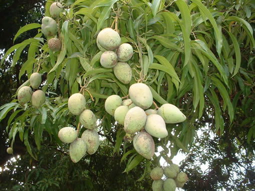
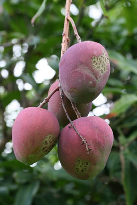
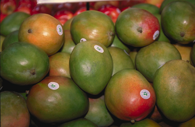

| |
| Carrots |
| Twinkies |
| Avocado |
| Pineapple |
| Turkey Sandwiches |
| Mangoes |
| Pizza |
| Potatoes |
| Other Resources |
Mangoes grow on trees, but you can also grow a mini-mango plant from the seed. It probably won't produce new mangoes, but it will still be a beautiful plant! You'll need an adult's help getting the seed out of the mango. It is inside a usk, which gets gooey mango stuck to it, so first, you'll need to scrub the husk. Let it dry overnight, then have your grown up cut the husk so you can get the seed out. It should be big, flat, and bean shaped. From here, there are a few ways to go, you could get the seed to sprout the same way you do with an avocado, or you can soak the seed--some people say overnight, some say 2 weeks, or until it sprouts. If you get more than one seed, you can try both and compare. (Remember, it's always better to use more than one seed anyway, since they may not all work.) Once it sprouts, you will plant it in soil, in a container about the size of a medium flowerpot, about 1/2 inch deep. Keep it warm, sunny, and moist, but not wet. In about 3 weeks you will see red shiny leaves! As your plant gets bigger, you can transplant it to a larger container, but if you want it to grow into a real mango tree, you will need to plant it in the ground outside someplace where it will be warm all the time. |

Unripe mangoes on a tree
(Public Domain, Wikimedia user Paquereau)

Ripe mangoes, ready to pick!
(Morguefile license, user: Kahanaboy)

Mangoes in the market
(Public Domain, USDA)
(Top photo Morguefile license, user: Xenia)